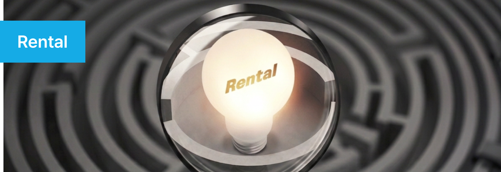

Overview
렌탈 산업의 가장 큰 과제는 계약·정산·회수 등 복잡한 프로세스로 인해 고객 경험이 단절되고 서비스 품질이 떨어지기 쉽다는 점입니다. 웅진은 WRMS와 ERP 기반의 통합 데이터 관리를 통해 고객·상품·계약 정보를 실시간으로 연결하고, AI·IoT·빅데이터 기반 분석으로 맞춤형 서비스를 제공합니다. 이를 통해 고객 만족도와 충성도를 동시에 강화하며, 반복 이용률과 장기 계약 유지율을 높입니다.
웅진은 곧, 렌탈의 기준
웅진은 30년 이상의 렌탈 사업 노하우를 바탕으로, IT 기술을 활용해 렌탈 비즈니스의 디지털 전환을 선도합니다. 웅진의 렌탈 관리 솔루션은 고객 만족도를 높이고 비즈니스 운영을 효율화하며, 데이터 기반의 의사결정을 지원함으로써 고객사의 경쟁력을 강화하는 데 목적이 있습니다. 이를 통해 렌탈 기업들이 더 나은 서비스와 지속 가능한 성장을 이루도록 돕습니다.
렌탈 비즈니스의 디지털 혁신
렌탈 산업은 빠르게 변화하는 디지털 환경에 적응해야 하는 과제를 안고 있습니다. 웅진의 솔루션은 이러한 변화 속에서 렌탈 기업들이 효율적인 시스템 관리와 데이터 활용을 통해 비즈니스의 혁신을 이루도록 지원합니다. 이 솔루션은 단순한 운영 개선을 넘어, 렌탈 산업 전체의 표준을 높이는 역할을 합니다.

Features
데이터 활용 및 분석을 통한
실시간 모니터링 및 의사결정 지원
4차 산업혁명과 맞물린 모바일/IoT/RPA/빅데이터/클라우드 등의 기술들이 렌탈 비즈니스와 결합하고 있습니다. 렌탈과 IT 기술의 만남을 통해 기존 데이터의 활용 및 분석으로 예측 데이터의 사용이 더욱 중요해지고 있습니다. 웅진은 고객사의 규모와 분야에 맞춘 맞춤형 솔루션을 제안합니다. 다양하게 수집된 데이터를 분석하여 통찰력을 강화하고, 고객 만족도를 높이며, 효율적인 사업전략 및 마케팅 계획 수립을 지원합니다. 이를 통해 실적 모니터링, 신속한 의사결정, 자원 절약 및 지속 가능한 경쟁 우위를 확보할 수 있습니다.
데이터 및 시스템 관리
렌탈 비즈니스에 요구되는 시스템은 렌탈 및 구독기간에 발생하는 모든 이슈들에 대해 즉각 대처하고, 체계적으로 데이터화하여 관리할 수 있어야합니다. 하나의 중심된 시스템 구현을 통해 비즈니스의 관리와 확장에 용이한 환경을 제공합니다. 웅진이 제공하는 WRMS는 필요한 모듈만을 선택하여, 빠르고 전략으로 나만의 시스템 구축이 가능합니다. 10개의 코어모듈을 기반으로 상품에 적합한 관리시스템을 만들 수 있습니다.
또한, 사용자는 AI를 활용해 필요한 데이터를 자동으로 추출하고, 데이터 시각화 및 분석을 위한 맞춤형 대시보드와 레포트를 작성할 수 있습니다. 계약시점부터 계약 종료까지 렌탈 및 구독기간에 발생하는 모든 변경사항을 유연하게 관리할 수 있으며, 상담 주문, 견적서 주문, 청약 접수 등 다양한 채널을 통해 주문이 가능합니다.